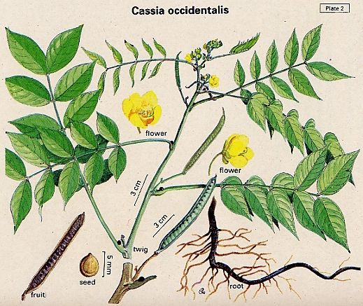

|
ECONOMICALLY
IMPORTANT PLANTS OF INDIA |
| Under-utilized Food and Fodder species and their wild relatives | Contributed by Ms.M.L Annapurna And Dr. Dhanapal, UAS, Bangalore |
Cassia occidentalis Linn.
Taxonomic
Details

----- Correct Name
----- Classification
----- Synonyms
----- Common Names
Other Biological Details
----- Habit and Habitat
----- Diagnostic Features
----- Reproductive Biology
---------- Breeding System
---------- Phenology
---------- Pollinators
---------- Seed Biology
----------Seed Germination
------ Cultivation
----- Major Pests and Diseases
Economic Potential and Uses
----- Parts Used
----- Uses
----- Harvesting Practices
----- Produce and Products
----- Chemistry
----- Processing Techniques
----- Other uses
----- Economic Potential to the
Country
----- Export Potential
Miscellaneous Information
Literature
Correct
Name : Cassia
occidentalis Linn.
Family : Caesalpinaceae
Synonyms :
Common Names :
Eng: Coffee Senna, Foetid Cassia, Nergo Coffee, Rubbish Cassia
Sanskrit: Kasamarda
Hindi: Badikasondi, Chakunda, Kasonda
Bengali: Kalkashunda
Malayalam: Natramatakara, ponnaviram
Marathi:Kasoda, Rankasvinda
Tamil: Ponnavarai, Ponthagarai
Telugu: Kasinda, Peddakasinda
Kannada: Anecogate, Doddatagase
HABIT
& HABITAT:
An erect, foetid, annual
herb or under shrub, 60-150 cm in height, found throughout India, up to an
altitude of 1500 m.
Availability
:
Status :
DIAGNOSTIC
FEATURES
Leaves
15-20 cm long, lanceolate or ovate-lanceolate; flowers yellow, in short racemes;
pods recurved, glabrous, compressed 10-13 cm x 0.8 cm; seeds dark olive green,
ovoid, compressed 6 mm x 4 mm, hard, smooth, shining.
Pollinators:
Seed Biology :
Seed Germination:
Cultivation:
MAJOR
PESTS & DISEASES
Pests:
Diseases:
·
The herb is
reported to be used as condiment and in perfumery.
·
The young
leaves are eaten alone as potherb or cooked along with unripe pods and eaten
with rice; the leaf when eaten is reported to act as prophylactic against
leucorrhoea.
·
The immature
seeds are eaten, but the mature ones only in times of scarcity.
·
The herb can
be utilized as cattle feed after ensilage, and can form maintenance ration for
bullocks although suspected poisoning of stock in Northern Queens land and
scouring in heifers have been reported.
Harvesting Practices
Produce and Products
Chemistry
The leaves contain chrysophanol, emodin,their glycosides, physcion,
metteucinol-7-rhamnoside, jaceidin-7-rhamnoside and 4,4,5,5-tetrahydroxy-2,
2-dimethyl-1, 1-bianthraquinone. Analysis fo the leaves and stems gave the
following results (dry basis); crude protein-19.86; ether extract-4.8; crude
fibre-22.21; N-free extract-45.35; mineral matter-8.78; calcium-1.83; and
phosphorous-0.24%. Analysis of the seeds gave (dry basis); crude protein-35.2;
ether extract-5; N-free extract-51.3; crude fibre-3.8; ash-4.7%; calcium-160;
phosphorous-226; iron-1098; niacin-7.59; and ascorbic acid-4.29 mg/100g. The
roots yield pinselin (Cassiollin), rhein, aloe-emodin and their glycosides,
chrysophanol, physcion, emodin, islandicin, helminthosporin, xanthorin,
sitosterol, campesterol, stigmosterol, 1,8-dihydroxyanthraquinone, 1.
7-dihydroxy-3-methoxyxanthrone, alpha-hydroxyanthraquinone and quercetin.The
flowers contain beta-sitosterol, emodin, physcion and its 1-beta-D-glucoside.
2.Medicinal Uses: Almost all parts of the plant are purgative, tonic, febrifugal, expectorant and diuretic. The plant is used to cure sore eyes, haematuria, rheumatism, typhoid, asthma and disorders of haemoglobin and is also reported cure leprosy. A decoction of the plant is used in hysteria, in dysentery and other stomach troubles and also as an application to sores, itch and inflamation of the rectum. The plant is employed in dropsy and as a vermifuge. Along with other plants, it is made in to an ointment used for skin diseases. The herb forms an ingredient of the patented indegenous herbal drug "Liv-52", which shows marked effect in the early cases of hepatic cirrhosis having steatorrhoea; Liv-52 reduced the toxicity of cadminium and berillium in experimental animals and showed antiviral activity in mice experimentally infected with SFV (Semiliki forest emcephalitis virus). As an ingredient of another patented drug 'Geriforte', it showed antifatigue effect in rats; excellent responce in senile pruritus cases was observed. An infusion of the bark is given in diabetes. The volatile oil obtained from the leaves, roots and seeds showed anti-bacterial and anti-fungal activity.
3.The leaves have purgative, febrifungal, tonic, sudorific, diuretic and stomachic properties. They are given in cough and hysteria. A lotion of the leaves is used as an eye-wash in tetanus. The leaves are used internally and externally in skin diseases, such as itches, yaws, scabies and ringworm. A decoction of the leaves is given to children as a mild vermifuge, the hot decoction is given as an antiperiodicand is reported to be preferred to quinine for its tonic properties. The fresh leaves, pounded with salt and onions, are applied as a poultice to guines worm sores to extruse the worms. They are used in the inflamatory swellings, rheumatism , wounds, sprains and wrenches and also given in Jaundice, pleurisy, headache and toothache. A paste of the leaves with calcium hydroxide is applied externally for baone fracture. The leaves are also ued in foot and mouth diseases of cattles. Their extract exhibits activity against earthworms.
4.The
seed is considered to be a blood tonic and excellent diuretic. Seeds are
useful in cough and wooping cough, convulsions and heart diseases. Their
powder is externally applied in cutaneous diseases and eruptions. The
extracts showed positive response on guinea pig-ileum, rat uterus, rabbit
heart and depressor-effec on blood pressure of dogs and also activity
against earth worms. the roots are considered bitter, tonic, purgative,
anthelmintic and duiretic, the alcohol ether extarct of the roots showed
diuretic property. In dysentery and diarrhoea often associated with malaria,
the roots are given along with lime. They are given in cough and for relief
in cramps, itches and in leprosy; They are also used in sore throat. The
pounded root mixed with black pepper, is used in headache; ti is given to
nursing women for purification for milk. The root bark is ued as a quinine
substitute to cure fever and its decoction is given for chest complaints and
as a stimulant and as a specific medicine for gonorrhoea and hepatic
troubles. The roots yield pinselin (Cassiollin), rhein, aloe-emodin and
their glycosides, chrysophanol, physcion, emodin, islandicin,
helminthosporin, xanthorin, sitosterol, campesterol, stigmosterol,
1,8-dihydroxyanthraquinone, 1. 7-dihydroxy-3-methoxyxanthrone, alpha-hydroxyanthraquinone
and quercetin.
1.
The wealth of India, A Dictionary of Indian Raw Materials and Industrial
Products, Vol. II. C, Publications and Information Directorate, CSIR, New Delhi,
India, 1950.